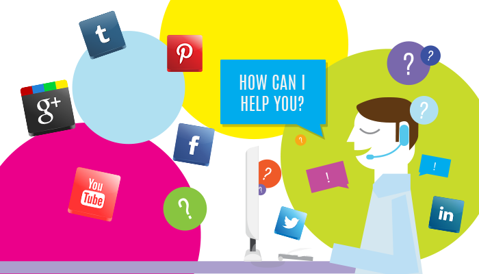
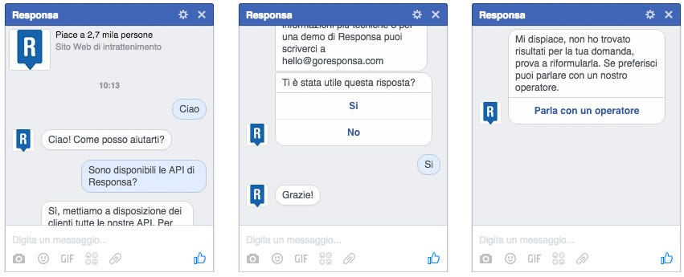

ChatBot: la rivoluzione del Customer Service
Le nuove chat per Messenger Facebook lanciate da Zuckerberg cambieranno il mondo del servizio clienti?

In questo periodo i ChatBot stanno suscitando sempre più attenzione; non solo vengono considerati come la fine dell’era delle app per smartphone, ma anche come il nuovo punto di arrivo nell’interazione uomo-macchina. Questo perchè i ChatBot in rete, sono progettati per comunicare con gli utenti proprio come fanno le persone tra loro; tramite dei sistemi di messaggistica via chat, interagiscono con le persone e rispondono alle loro domande.
In Responsa sviluppiamo soluzioni per l’automazione del servizio clienti online, tra cui un Chatbot per Facebook Messenger lanciato proprio alcune settimane fa in collaborazione con Pitchtarget.

ChatBot : perché sono così importanti?
Ad aprile, grazie alla possibilità per gli sviluppatori di utilizzare le sue API, i ChatBot sono approdati su Facebook Messenger, che ha raggiunto 900 milioni di utenti attivi al mese e questo non è un fatto da poco. Infatti, essendo il social network più grande al mondo, permette di raggiungere tantissimi utenti ovunque essi si trovino; le aziende, consapevoli di ciò, si sono servite servono da tempo di Facebook come strumento di engagement e marketing e gradualmente — volenti o nolenti — anche come canale di Customer Service. Questo è il motivo per cui i bot sono stati pensati per fare da intermediari tra una azienda ed un cliente finale anche sui social network, assicurando un supporto automatizzato per le richieste di informazioni su prodotti o l’esplorazione di contenuti in maniera continuativa 24 ore su 24 e 7 giorni su 7. L’introduzione di questi nuovi sistemi segna una rivoluzione conversazionale e sta gradualmente rivoluzionando il mondo del Customer Service adottato dai brand per soddisfare le richieste dei propri clienti.
Quali sono i vantaggi per le aziende e per i consumatori?
I vantaggi sono innumerevoli sia lato azienda sia lato utente. Infatti il ChatBot si inserisce nel mondo del Customer Service come sistema di supporto all’attività svolta dagli operatori umani, rispondendo in modo automatizzato a quella tipologia di domande che sono ripetitive e comuni, come ad esempio “che orario di apertura ha in vostro punto vendita di Milano?”, domande per cui l’intervento di un operatore non porta alcun valore aggiunto. Questo si traduce in una diminuzione del traffico di chiamate o messaggi che arrivano agli operatori, permettendo loro di potersi dedicare a quei clienti che presentano dei problemi più complessi e che necessitano di un supporto specifico. I clienti dal parte loro, possono trovare in maniera molto veloce e in qualunque momento lo desiderino, le risposte alle loro domande senza dovere attendere la disponibilità di un operatore e, qualora non riuscissero a trovare una risoluzione ai loro dubbi, possono passare al supporto di un operatore umano grazie a una modalità di interazione “ibrida”. In questa maniera l’azienda potrà seguire sempre i propri clienti, cercando di soddisfare qualsiasi loro esigenza.
I ChatBot possono essere utilizzati anche come dei “tester” che permettono di capire quali sono le esigenze dei clienti, in particolare le domande più ricorrenti, i dubbi più comuni, cosa funziona o meno nel sito e nel servizio o prodotto che stiamo vendendo. In sostanza, permettono all’azienda di ricavare tantissime informazioni che rimarrebbero inespresse e che sono importantissime per migliorare e adottare nuove strategie a misura di utente.
Dentro e fuori l’azienda.
Questi sistemi di supporto virtuale possono essere utilizzati anche internamente dalle aziende come strumenti che gli operatori del Contact Center possono utilizzare per trovare in maniera rapida le risposte che stanno a loro volta cercando, senza dove chiedere direttamente al responsabile reparto o al collega di turno. Tutto il know-how dell’azienda può essere capitalizzato e catalogato in una knowledge base, che costituirà il bagaglio di conoscenza del bot e diventerà così un supporto attivo per le attività di Customer Service. Le informazioni, internamente, serviranno come supporto al lavoro dei dipendenti o come materiale didattico, ed esternamente permetteranno un servizio al cliente attivo in qualsiasi momento.
Quali sono i possibili settori di applicazione?
I settori che adottano questo tipo di tecnologie sono tutti quelli che vogliono offrire un servizio per il supporto al cliente capace di soddisfare quanto più possibile le sue richieste, in tempi rapidi e in ottica omni-channel, facendolo sentire sempre seguito. Ad oggi, possiamo vedere le prime strategie applicate al settore bancario, a quello assicurativo e delle telecomunicazioni. Le opportunità sono davvero molteplici e non si può non evidenziare come essi i bot rappresentino un’interessante campo di sperimentazione per il futuro andando ad investire altri inaspettati settori.